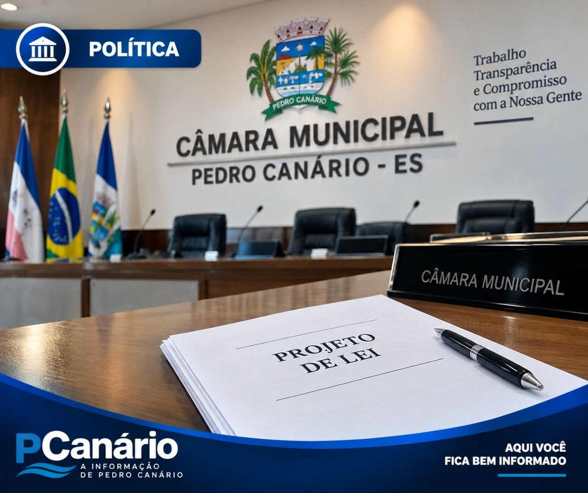

POLÍTICA
Câmara de Pedro Canário pauta projetos sobre teletrabalho e revisão de vencimentos
07/09/2026 às 14:03

Imagem ilustrativa gerada por IA
A Câmara Municipal de Pedro Canário incluiu na pauta legislativa dois projetos do Poder Executivo relacionados à administração pública e aos servidores municipais.
Uma das propostas trata da instituição e regulamentação do regime de teletrabalho na administração pública direta, autárquica e fundacional do município.
A pauta também inclui um projeto de lei complementar sobre a revisão geral anual dos vencimentos e subsídios dos servidores públicos municipais.
Os projetos constaram na pauta da 14ª Sessão Ordinária do segundo período legislativo, marcada para 1º de setembro de 2026.